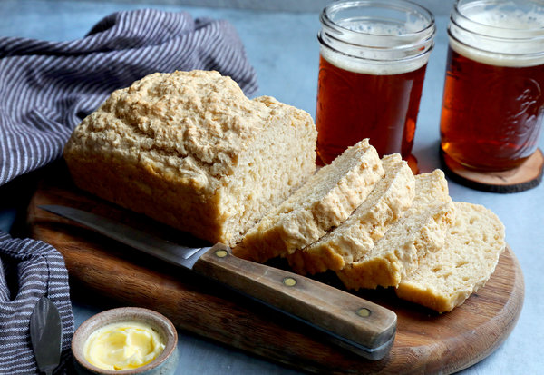

Beer Bread

Description
Bread made from beer?! It really is as good as it sounds!
Ingredients
- Unsalted butter
- Polenta
- All purpose flour
- Baking powder
- Salt
- Sugar
- Beer
Steps
- Heat oven to 375 degrees. Butter a 9-by-5-by-3-inch loaf pan and dust with cornmeal. For stovetop baking, use a heavy Dutch oven or similar pot that has been greased and dusted with cornmeal but not heated.
- Mix flour, baking powder, salt and sugar and stir in the beer. Place batter in the pan. Oven baking will take about 35 minutes. For stovetop baking, cover the pan and place it on a heat shield over a low to medium flame and bake until a knife or cake tester comes out clean.
- Remove from pan, drizzle with butter if desired and allow to cool completely before slicing. The bread has a texture similar to that of English muffins and tastes best toasted.